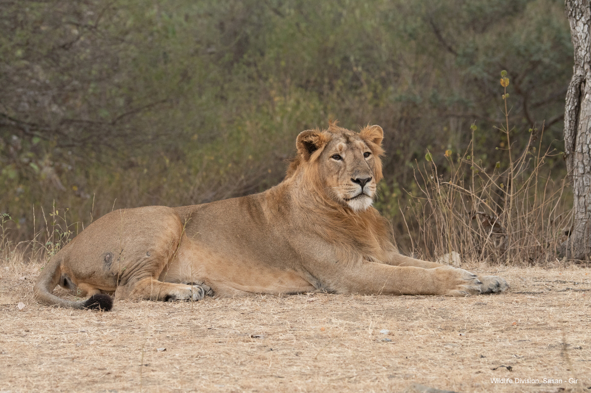

Gir National Park - Jungle Safari

Location: Gujarat, India
Nearest City: Junagadh
Coordinates: 21.1240°N, 70.8242°E
Area: 1,412 km²
Established: 18 September 1965
Governing Body: Forest Department, Gujarat
About Gir National Park
Gir National Park, also known as Sasan Gir, is a renowned wildlife sanctuary in Gujarat, India. It is the only place in the world where Asiatic lions can be seen in their natural habitat. The park is a haven for wildlife enthusiasts and nature lovers.

Wildlife
The park is home to more than 600 Asiatic lions. Other wildlife species include:
- Leopards
- Chinkara (Indian gazelle)
- Nilgai (blue bull)
- Sambar deer
- Four-horned antelope
- Jackals and hyenas
- Crocodiles
- Over 300 species of birds
Flora
Gir is a mixed deciduous forest interspersed with grasslands. Important tree species include:
- Teak
- Jamun
- Tendu
- Dhak
- Acacia
Safari Experience
Gir Jungle Safari offers guided jeep tours to explore the park. Safari booking can be done online through the official website. There are 8 safari routes and timings depend on the season. Trained guides accompany each safari.
Attractions
- Devalia Safari Park (Interpretation Zone)
- Kankai Mata Temple
- Kamleshwar Dam
- Girnar Hills (near Junagadh)
- Local tribal culture and festivals
Visitor Information
Best time to visit: December to March (Park is closed from 16th June to 15th October)
Entry permits: Available online or at the park gate
Accommodations: Forest lodges, resorts, and hotels are available nearby